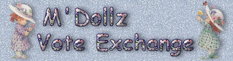
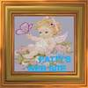
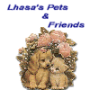
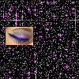
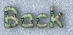
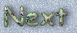
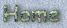
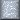

|

I hope to have MANY, MANY VE friends!
I'll use banners to display them, as space permits. :)
If you'd like to VE, please leave a message in my SPIRITBOOK and I'll visit you. :)
NOTICE...for some reason, I cannot send email to AOL users, if you have an alternate email address, please let me know when you sign my book!!

**Voting Ring |
**NO UPDATE YET**Voting Ring |

**Won Inspiring Heights, 3 X's**
Voting Ring |
**Voting Ring Below[Henhouse?] |

**Voting Ring
Special Vote |
"YOUR SITE HERE"
**Voting Ring |
"YOUR SITE HERE"
**Voting Ring |
"YOUR SITE HERE"
**Voting Ring |
**UPDATED 12/04**(
Country Tales Roster pages:
The PigPen Hen House Barn Yard The Woods Swimming Hole Warzone DMan Dome



Click on a button below to navigate:

TSF Vote Banner Exchange
Backgrounds, banner & buttons created by My Mom
KountryKids tubes from:
Ann's Tubes
http://www.annsgraphics.com/tubes.html
|